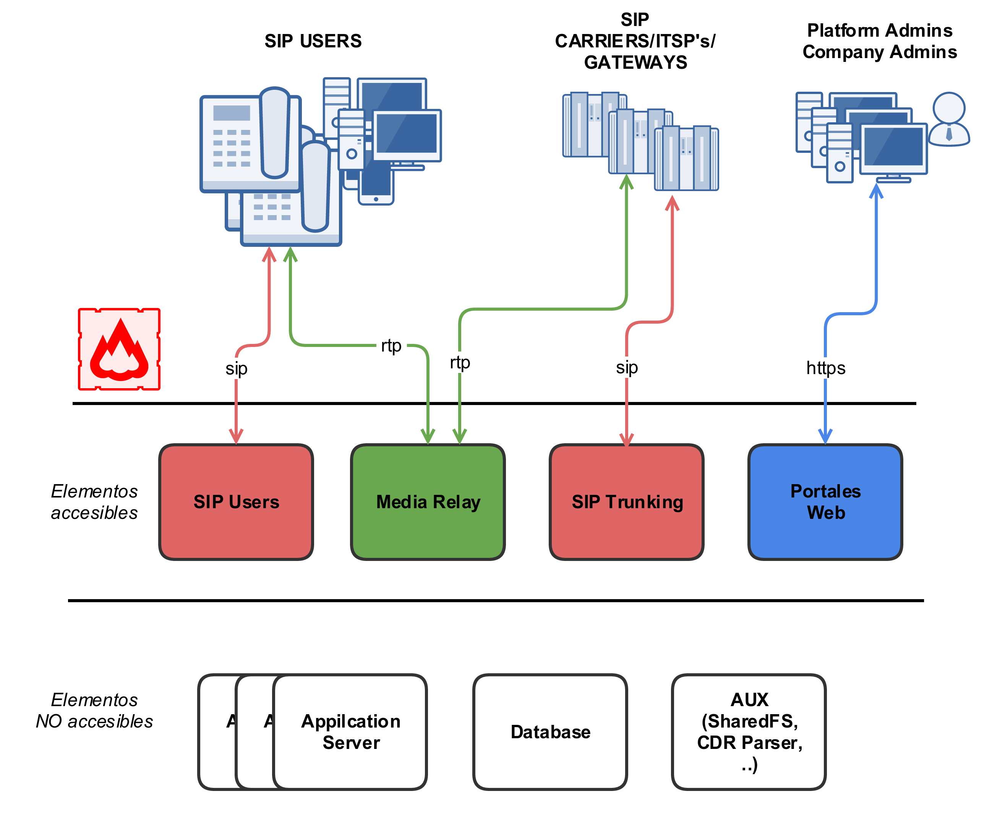

Arquitectura general de la plataforma¶
Esquema general¶
Este esquema refleja la arquitectura global de la solución IvozProvider, con todos los elementos que la componen.
Este es otro esquema más conceptual:

Flujo señalización SIP¶
El primer diagrama muestra el tráfico de señalización SIP que ocurre en el establecimiento, modificación y finalización de sesiones acorde al RFC 3261 y otros RFCs relacionados.
Estas son las entidades SIP externas involucradas:
UACs: teléfonos de usuarios, softphones, dispositivos compatibles con SIP.
Proveedores SIP: proveedores usados para la interconexión de IvozProvider con redes externas SIP (y, probablemente, con la PSTN).
Todo el tráfico SIP (en cualquiera de los transportes soportados: TCP, UDP, TLS, WSS) que se envia/recibe desde la plataforma se hará deste las siguiente dos entidades SIP internas de IvozProvider:
De hecho, los UACs de usuario solo se comunican con el Proxy SIP de usuarios y los ‘Proveedores SIP’ solo se comunican con el Proxy SIP de Proveedores.
Dentro de IvozProvider estos dos proxies hablan a los Servidores de Aplicación que ejecutan Asterisk, ya que ningun elemento externo puede hablar con los Servidores de Aplicación directamente.
Flujo audio RTP¶
La sesiones iniciadas por el protocolo de señalizacion SIP implican la compartición de flujos de multimedia entre las entidades implicadas.
Estos flujos emplean RTP para enviar y recibir el propio media, generalmente empleando el protocolo de transporte UDP.
Las entidades externas involucradas en las sesiones RTP se pueden dividir en
Usuarios.
Proveedores.
Ambas entidades intercambian RTP con el mismo servicio de IvozProvider: los servidores media.
IvozProvider implementa servidores media usando tanto RTPengine como RTPproxy.
Al igual que ocurre con SIP, estos servidores de media intercambian RTP cuando es necesario con los Servidores de aplicación, pero nunca permiten que los extremos externos a la plataforma hablen entre ellos directamente.
Tráfico HTTPS¶
HTTPS es el tercer tipo de tráfico que interncambian
El tráfico HTTPS se emplea para:
Provisión de terminales: Muchos teléfonos piden su configuracion al iniciarse y esta puede ser enviada a través de HTTPS.
Portales web: IvozProvider cuenta con 4 portales de web para los diferentes platform roles.
Estos dos tipos de tráfico son gestionados por los Portales web de IvozProvider.
Elementos adicionales¶
IvozProvider cuenta con multiples elementos que no están expuestos al mundo pero juegan un papel crucial.
El perfil mas significativo es el de data que reune toda la informacion de la plataforma and la distribuye entre la mayoría de los softwares restantes. IvozProvider utiliza MySQL para esta tarea.
Otro proceso menos crucial son los gestores de tareas asíncronas: el CDR ha de ser parseado, la llamadas tarificadas, las grabaciones codificadas, etc.
Elementos auxiliares¶
El perfil auxiliar ejecuta programas, que aún no siendo vitales para el flujo de las llamadas, facilitan mucho las tareas para los mantenedores de las plataformas IvozProvider.
De hecho, sin ellos, sería muchísimo más dificil debugear los problemas y la calidad del servicio proporcionado se vería afectada.
IvozProvider incluye:
Homer SIP capture: Este fabuloso software nos permite capturar todo el tráfico SIP para ser analizado posteriormente y obtener estadísticas, métricas de calidad de la llamada, etc. Visite SIP Capture website para más información.
Visor de logs Graylog: Todos los logs de la plataforma IvozProvider se almacenan y muestran con Graylog divido en marcas.
Panel de gráficas Grafana: Grafana nos permite tener gráficas de todo. Literalmente.